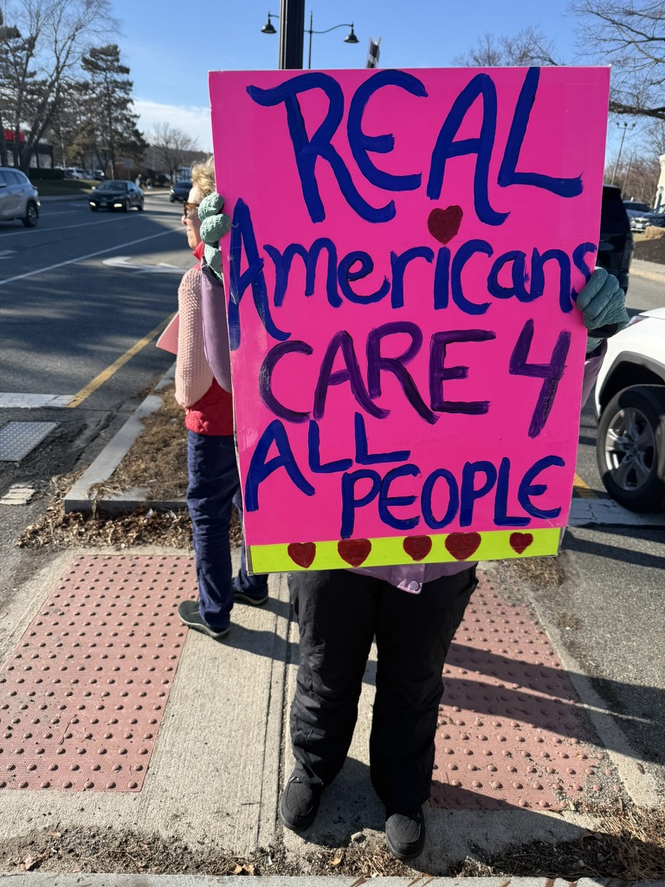
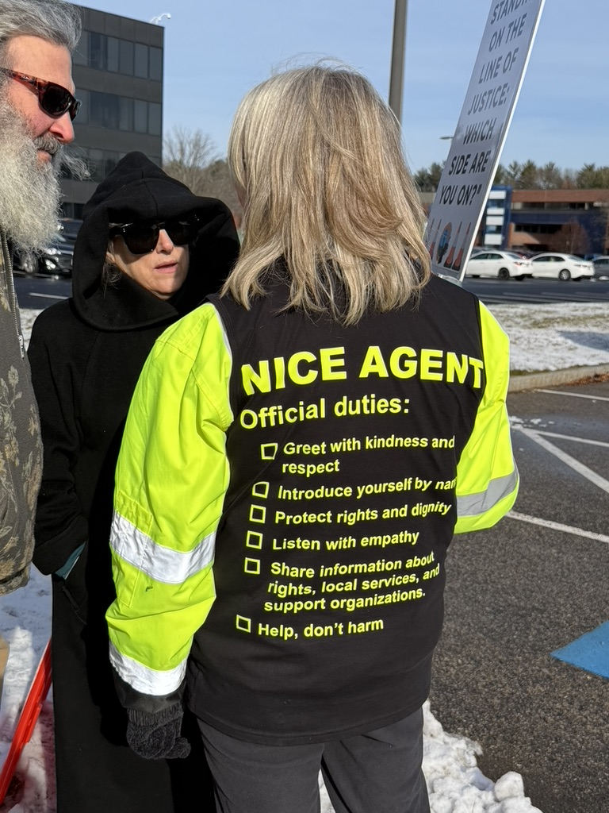
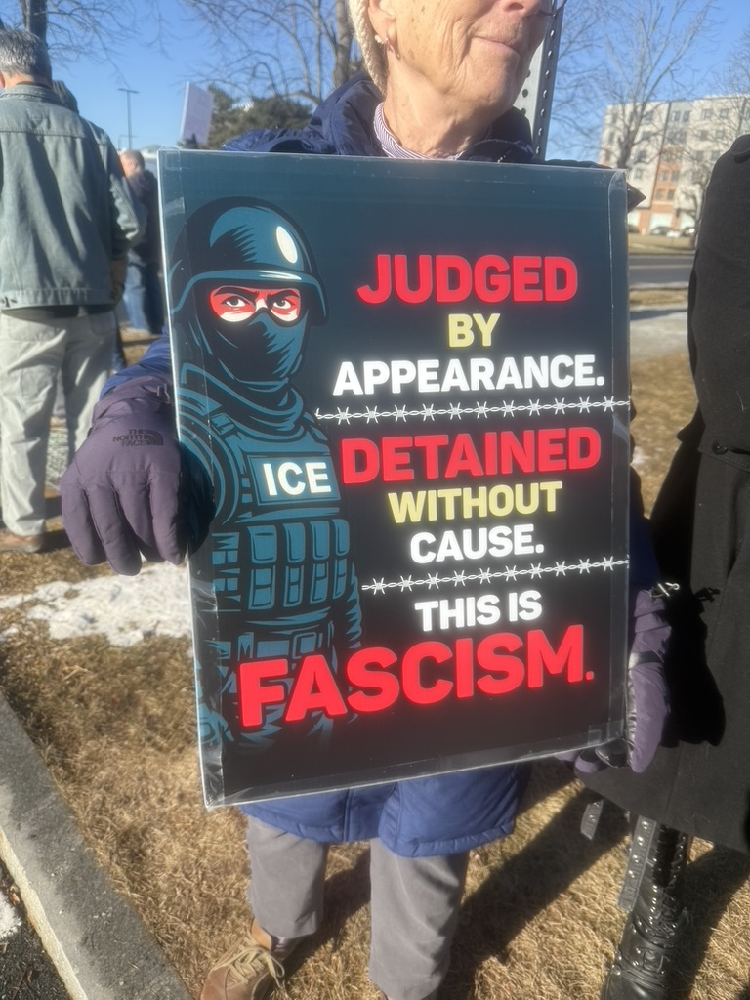

Monday & Tuesday Protests – Stop ICE Cruelties

General Info
Join us Monday and Tuesday 11-1 to protest ICE cruelties.
- Where: Burlington, MA. 11–12: Hold signs on a busy street. 12–1: Gather outside the ICE office for signs, connection, and solidarity.
- What to bring: Warm clothes, snack, water, protest sign (extras available)
- Meeting point: Corner of Burlington Mall Road and District Ave, closest to Pressed Cafe.
- After: Optional lunch at Pressed Cafe.



Guidelines
- We protest peacefully.
- We do not antagonize or engage with counter pro-ICE protestors. Do not use the median near the cross walk. They get energy from engaging with us and can use these interactions to attract followers.
- We do not block the entrance, approach ICE agents, or block traffic on District Avenue.
- We do not stand in restricted areas as designated by Burlington police.
- We protest systems, not people. Our goal is moral clarity without hostility. Please keep chants firm, clear, and grounded in human dignity. If an ICE vehicle passes, consider phrases like "No cages, no cruelty", "You can quit", "Do the right thing, quit", "Stop the cruelty/destroying families/breaking the law", or "Show compassion".
Tips for Handling Counterprotesters
- Move to a different place
- Do not respond to taunts
- If you are being filmed, put a sign up in front of your face
- Look to the side
- Look for a marshal in a bright vest
Please report the incident to a marshal in a bright vest.
Photography and Video Recording
Attendees should be aware that Bearing Witness standouts are held in a public space. Photographers and videographers capture images and videos at each standout.
Those uncomfortable with being photographed or recorded may wish to consider other ways to help immigrants.
Safety
- Marshals in fluorescent vests are scattered throughout the crowd. If you encounter a problem, seek out a marshal.
- Medics in blue fluorescent vests are also present. They have water, snacks, hand warmers, and first aid kits.
- Before arriving, please consider your own self-preservation (citizenship status) and self-care (sunscreen, hydration, etc.).